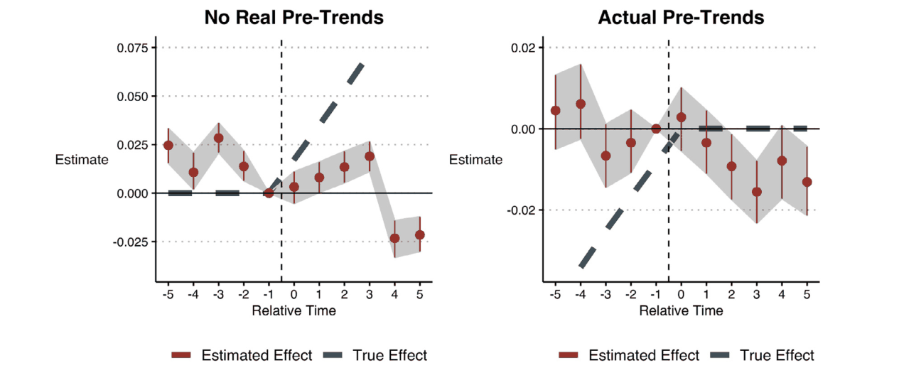

계수 하나 대신 상대시점별 계수를 그리는 사건연구(event study)에서도 같은 문제가 생긴다. 도입 전후 5년의 더미를 포함하고 −1기를 기준으로 제외해 추정했다.
읽는 법. 검은 점선이 상대시점별 참 평균효과, 붉은 점이 TWFE 추정치의 기댓값, 세로선이 모의자료 500개의 2.5, 97.5 백분위수 범위다 (균형패널로 다시 계산).

대안 추정량은 모두 이미 처치된 단위가 비교집단이 되지 않게 막는다. Callaway-Sant'Anna(CS)는 코호트 g의 t기 효과 ATT(g, t)를 2×2로 하나씩 구한 뒤에 평균한다.
읽는 법. 앞의 세 집단 예제다. 테두리 친 칸이 2×2 하나를 이룬다. 실선은 처치 코호트의 t기와 도입 직전(g − 1)기, 점선은 같은 두 시점의 비교집단이다.
| Callaway-Sant'Anna | Sun-Abraham | |
|---|---|---|
| 비교집단 | 아직 미처치, 마지막 처치, 미처치 가운데 선택 | 미처치 또는 마지막 처치 코호트 |
| 추정 | (g, t)마다 2×2 회귀 | 코호트×상대시점 더미를 포함한 회귀 하나 |
| 공변량 | 처치 전 공변량 허용 | 허용하지 않음 |
공변량 없이 미처치 단위를 비교집단으로 사용하면 두 추정치는 같다.
세 번째 대안인 stacked regression은 응용연구자들이 고안했다. 도입 사건마다 그 코호트와, 사건창 안에서 처치받지 않은 단위만 모아 자료를 따로 만든 다음, 이 자료들을 쌓고 자료별 고정효과를 포함해 TWFE를 추정한다.
읽는 법. 가상 예제다. U 1단위, k 1단위, l 3단위이고 효과는 k가 항상 2, l이 항상 6이다. 사건창은 도입 1기 전부터 1기 후까지다.
저자들은 TWFE의 부호가 바뀌었던 Sim 6에 세 대안을 적용했다. 비교 기준은 유효한 비교집단이 있는 두 코호트(1989, 1998년)의 도입 후 5년 평균효과다.
읽는 법. 위는 상대시점별 추정치의 기댓값과 참 효과 경로(점선)다. 아래는 모의자료 250개의 정적 추정치이고 세로 점선이 기준값이다. 이 화면에서 다시 계산한 값이다.